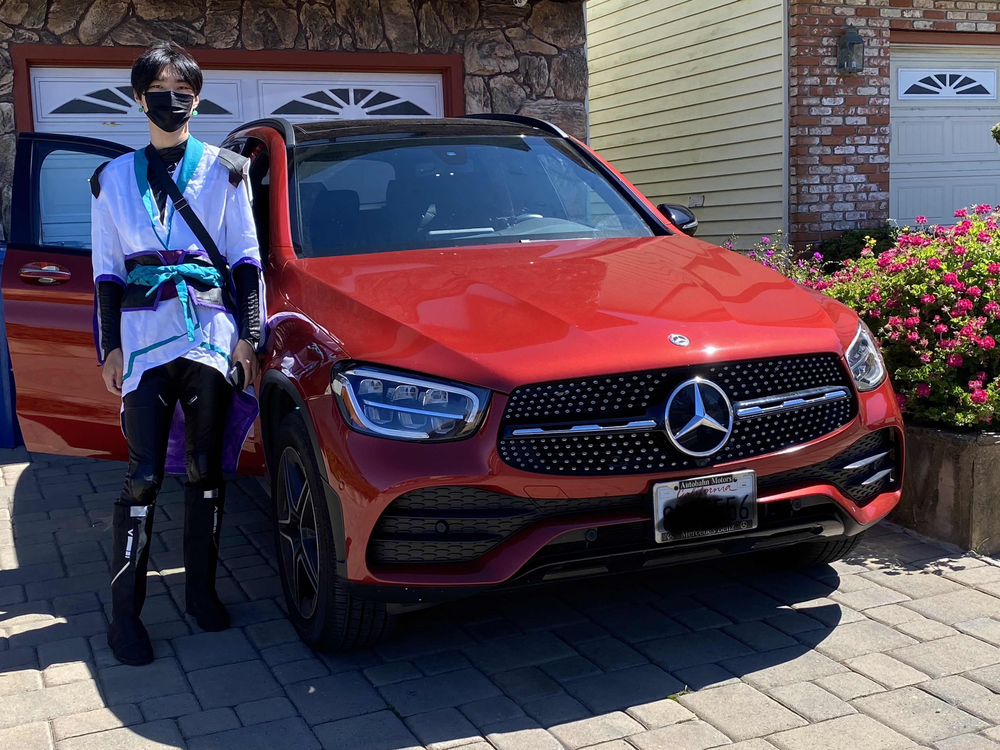

Lab 6: Arrays and Objects
Challenge
The goal of this lab is to practice with arrays and objects in javascript.
Problems
There were no problems with the lab as instructions were very straight forward.
Reflection
Overall this lab was extremely easy to me. Even though I barely remember what we learned in class the day before, the lab instructions were very simple and clear that I was able to understand what to do just fine.